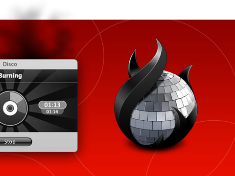
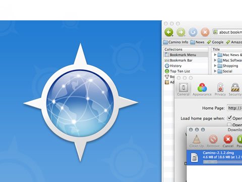

Independent Product Design & Iconography
Quite early on I sensed the potential design could have when combined with technology, specifically interaction and motion design seemed very promising. As there where no product design programs yet, I split my time between going to the art academy for graphic design, and working as a freelance designer. I slowly grew my skills, in particular practicing my craft whilst building Camino. This is also when I discovered the satisfaction of the seemingly simple challenge of designing application and toolbar icons. Keeping an icon clear and simple, within the constraint of size and the need to be a valuable and a true embodiment of it's app. Eventually many popular apps sported my icons, and I dared take the jump to designing my own product, Disco.
UI + Icon + Web Design, Branding, Support
Disco '06 / '07
Mac Disc Burning
In early 2006 Austin Sarner and I decided to build Disco. We set the goal to create a useful product with auxiliary experiences that would try to push industry boundaries. Our presales and marketing strategy, unique brand experience, highly minimalist interface, 4 axis functional animations, and revolutionary smoke emitting progress indication where all a first. Sofa and many other friends collaborated with us to push those boundaries. Disco became a prime example of what was dubbed the "delicious generation", drawing a ton of attention, and tens of thousands of people to use the app.
UI + Icon + Web Design, Branding, Support
Camino Browser '02 / '06
Mozilla Power. Mac Style.
As a formally trained graphic designer there was much to learn for me about interface and interaction design, engineering, strategy, project management, etc. The talented and patient volunteers working on Camino taught me the essentials of software development. I volunteered to help transform the open-source project to become more accessible, by making the product, and all supporting collateral more accessible, easier to understand, and meet a high bar of craft. Camino grew to become the preferred Mac browser for hundreds of thousand of people in the early 2000's.
Developer Icon Kit
It all started with a hobby that got out of hand. Following my intuition, I started drawing "better" icons for the apps I enjoyed using. I quickly learned that icon design was worthy a career, and it ended up morphing into my broader introduction of the software industry.